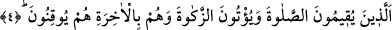
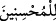

Allah Teâlâ’nın Kitâb’ının sadece muhsinler/güzel davrananlar için bir hidâyet
rehberi ve rahmet olarak tahsis edilmesinde, Allâh’ın onlardan başkasını hidâyete
erdirmeyeceğine delil vardır.
et-Te’vîlât’ta şöyle geçer: “Muhsin, Allâh’a yönelerek Kur’ân’ın ipine sarılan
kimsedir. Bu sebepledir ki, Hz. Peygamber (a.s.), Cibrîl (a.s.) kendisine “İhsan nedir?”
diye sorduğunda onu: “Sanki O’nu görüyormuşçasına Allâh’a kulluk etmendir”[59]
diye tefsir etmiştir. Şu halde bu vasfa sâhip olan kişi, O’nu görene kadar O’na yönelir.
Allâh’a yönelen kişinin, O’nun ipine sarılması zaruridir. Değilse Allah Teâlâ bütün
cihetlerden münezzehtir; O’na hiçbir cihetten yönelmek mümkün değildir.”
İşte bu sebepledir ki, Musa (a.s.): “Yâ Rabbi! Ben seni nerede bulabilirim?” diye
sorunca Allah Teâlâ: “Ey Mûsâ! Beni kasdettiğin/bana yöneldiğin zaman bana
ulaşmışsın demektir.” buyurdu. Bu cevap işâret etmektedir ki orada herhangi bir
yön/mekan yoktur ki O’na yönelinebilsin.
Ey sûfî, bu feryat ve figana sebep nedir? Nereden nereye?
Bu nükte âşikârdır, ilme’l-yakînden ayne’l-yakîne
Ey Câmî! Yakınlığı uzaklığı düşünme
Cenâb-ı Hak için yakınlık, uzaklık, vasl da fasl da yoktur
Sonra dinde bilinen meşhur iyilikler beyan edilmek üzere şöyle buyrulmaktadır:
4. O kimseler, namazı kılarlar, zekâtı verirler; onlar âhirete de kesin olarak îman
ederler.
Bu âyet, önceki âyette zikredilen “güzel davrananlar”ı açıklayan sıfat cümlesidir ve
onların yaptıkları iyilikleri beyan etmektedir. Buna göre “__WORD__ kelimesinin başındaki
“lâm”, cinsi tarif için gelmiş olur. Eğer “lâm” istiğrak için olup îtikâdî ve amelî bütün
iyilikler kasdedilirse, o halde başka iyiliklere olan fazîletlerini ortaya koymak üzere
diğerleri arasında sadece bu üçü zikre değer görülmüş olur.
“O kimseler, namazı kılarlar,” Namazı ikâme etmek, onu edâ etmek demektir.
“Edâ”nın “ikâme” sözüyle ifâde edilmesi, namazın dinin direği olduğuna işâret etmek
içindir.
el-Müfredât’ta şöyle denir: “Bir şeyi ikâme etmek, onun hakkını tam olarak vermektir.
Namazı ikâme etmek de, onun şartlarını tam olarak yerine getirmektir. Yoksa namazın
hallerini (hey’etlerini) yerine getirmek değildir.
Namazın şartları iki kısımdır: Bir kısmına şerâit-i cevâz (câiz olma şartları) denir.
Yâni, farzları, sınırları ve vakitleri. Diğerine şerâit-i kabûl (kabul şartları) denir. Yâni